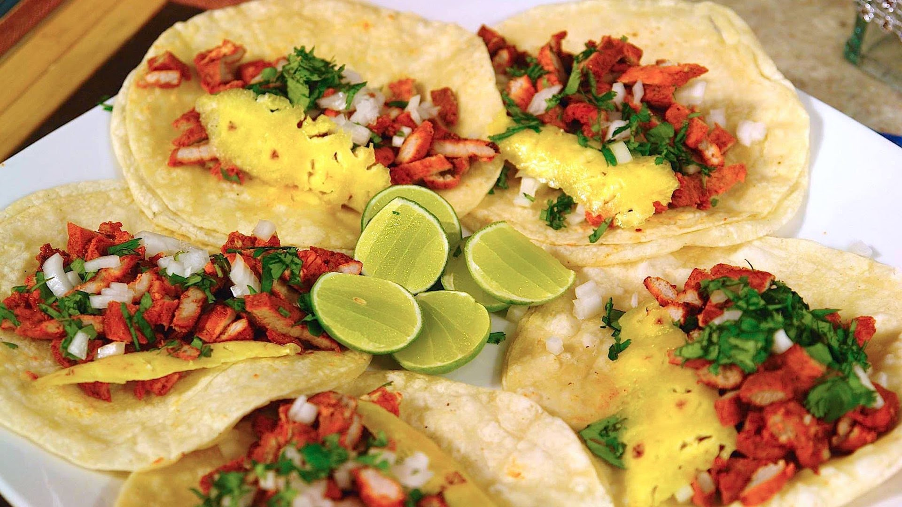

¿Qué Son Los "Tacos Al Pastor"?
Los tacos al pastor, en caso de que no los conozcas, están hechos de carne de puerco marinada en una salsa que contiene chiles, especias, vinagre, piña y otros deliciosos ingredientes y servidos con cilantro, cebolla, limón y salsa.
Ingredientes para los "Tacos al pastor"(aproximadamente 80 tacos):
- 3 cucharadas soperas de aceite de oliva.
- 3.5kg de posta de puerco.
- 4 cucharadas de sal.
- 7 dientes de ajo pelados.
- 6 chiles guajillo chiles sin semillas y sin pata.
- 2 chiles ancho sin semillas y sin pata.
- 3 chiles chipotles en adobo.
- 1/2 cebolla blanca mediana.
- 500 gramos de piña molida en su jugo.
- 6 clavos de olor.
- 2 cucharadas soperas de orégano seco.
- 1/2 cucharada sopera de tomillo seco.
- 1 cucharada sopera de mejorana.
- 1/2 taza de vinagre blanco.
- 1/2 taza de jugo de limón.
- 1/4 taza de vinagre de vino blanco.
- 60-80 Tortillas.

Preparacion:
- Corta la posta de puerco en trozos de aproximadamente 3-4 pulgadas (6-8 cm.). Rocíalos con una de las cucharadas de sal. Calienta el aceite en la olla de presión y fríe la carne por cada uno de sus lados por algunos minutos (incluyendo el hueso). Verás como cambia del color rojizo a color grisáseo y algunas partes se dorarán.
- Mientras la carne se dora, agrega el ajo, los chiles guajillos, los chiles anchos, los chiles chipotles, la cebolla, la piña (con todo y jugo), los clavos de olor, el orégano, el tomillo, la mejorana, el vinagre blanco, el jugo de limón, el vinagre de vino blanco y las otras tres cucharadas de sal a la licuadora. Muele hasta conseguir una salsa espesa y homogénea.
- Vacía la salsa sobre la carne dorada. Tapa la olla de presión u olla express y calienta a fuego alto hasta que la válvula de vapor empiece a chillar (tomará aproximadamente 8-10 minutos). Cuando esto pase, baja la temperatura a un grado en el que la valvula chille y se balancee rítmicamente y suavemente por 25 minutos (el tiempo de cocimiento puede variar dependiendo de la olla de presión, por favor checa las instrucciones de la tuya).
- Pasados los 25 minutos. Apaga el fuego y deja la olla enfriarse solita antes de abrirla (no la pongas bajo el agua fría).
- Deshebra la carne y sirve en tortillas calientitas.
- Añade cilantro, cebolla, un pedazo de piña, jugo de limón y la salsa de tu gusto.
Caja de comentarios